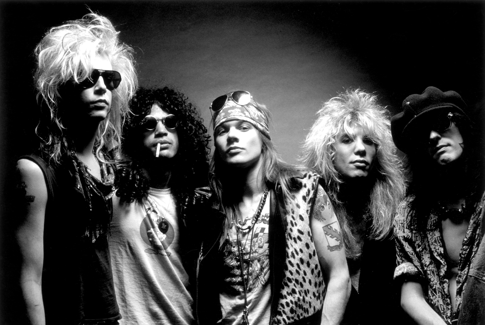
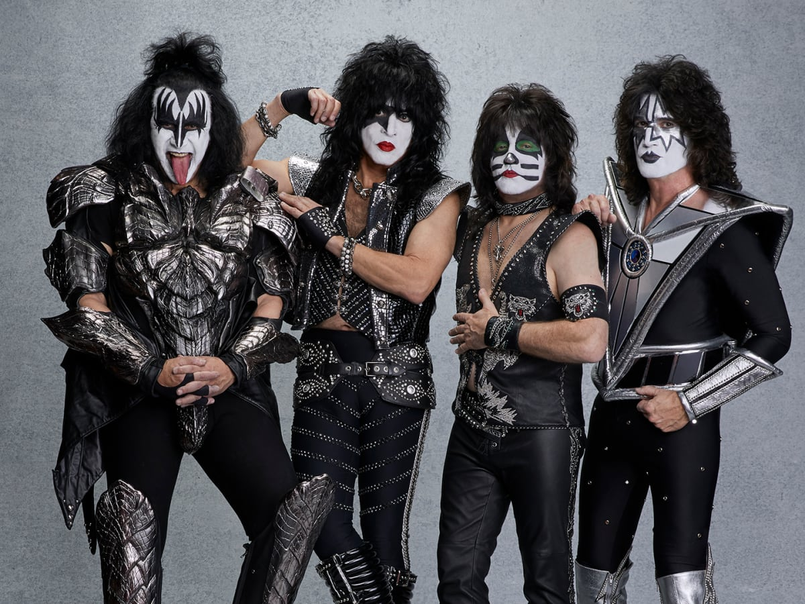

Music of the 80s!
Guns N' Roses

Guns N' Roses is an American hard rock band from Los Angeles, California, formed in 1985. When they signed to Geffen Records in 1986, the band comprised vocalist Axl Rose, lead guitarist Slash, rhythm guitarist Izzy Stradlin, bassist Duff McKagan, and drummer Steven Adler. The current lineup consists of Rose, Slash, McKagan, guitarist Richard Fortus, drummer Frank Ferrer and keyboardists Dizzy Reed and Melissa Reese.
Guns N' Roses' debut album, Appetite for Destruction (1987), reached number one on the Billboard 200 a year after its release, on the strength of the top 10 singles "Welcome to the Jungle", "Paradise City", and "Sweet Child o' Mine", the band's only single to reach number one on the Billboard Hot 100. The album has sold approximately 30 million copies worldwide, including 18 million units in the United States, making it the country's bestselling debut album and eleventh-bestselling album. Their next studio album, G N' R Lies (1988), reached number two on the Billboard 200, sold ten million copies worldwide (including five million in the U.S.), and included the top 5 hit "Patience".
Kiss

Kiss (often stylized as KIϟϟ) is an American rock band formed in New York City in January 1973 by Paul Stanley, Gene Simmons, Ace Frehley, and Peter Criss. Well known for its members' face paint and stage outfits, the group rose to prominence in the mid–late 1970s with its shocking live performances, which featured fire breathing, blood-spitting, smoking guitars, shooting rockets, levitating drum kits, and pyrotechnics. The band has gone through several lineup changes, with Stanley and Simmons being the only members to feature in every lineup. The original and best-known lineup consists of Stanley (vocals and rhythm guitar), Simmons (vocals and bass), Frehley (lead guitar and vocals), and Criss (drums and vocals).
With their make-up and costumes, the band members took on the personae of comic book-style characters: the Starchild (Stanley), the Demon (Simmons), the Spaceman or Space Ace (Frehley), and the Catman (Criss). Due to creative differences, both Criss and Frehley had departed the group by 1982.